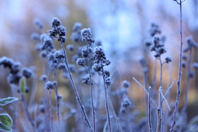

Prep Samlivskurs for par -
et helgekurs for samlivet
Kommunikasjonskurs for par
Hvor: Aarholt-tunet Gjestegård, Stokke i Vestfold.
Fra: fredag kl 18.30 til søndag kl 15.30
Tid og pris: se "Påmelding/pris/datoer" i venstremenyen.
Arrangør: Den landsomfattende organisasjonen "Voksne for barn" i samarbeid med Aarholt-tunet Gjestegård. Kurset er støttet av bufdir, barne, ungdoms og familiedirektoratet.
For hvem:For alle par. Det er deltakere fra hele landet på kursene våre. (Via Torp/S.fj. flyplass eller Gardermoen, eller tog/bil).
Aarholt-tunet Gjestegård har arrangert samlivskurs siden 2001, og har tatt imot over 1500 par på helgekurs. Kurset har erfarne foredragsholdere. Kurset er ikke terapi, har ikke gruppesamlinger, og kurset er livssynsnøytralt. Det handler altså ikke om hva som er "rett", men at paret får kommunisere om egne følelser og behov.
Det er stor variasjon av pedagogiske virkemidler i kurset, og det er derfor lettere å følge. Det er og mye humor.
Samlivskurset PREP vil forsterke og fremheve de gode sidene i samlivet, og grunnene til at dere valgte hverandre. Par sier:
- "Vi har kommet tilbake til noe av den gode måten vi kommuniserte på før trykket ble for stort".
- "Nå setter vi mer pris på hverandre".
- "Dette ville jeg ikke, for jeg mente vi hadde det så bra at vi ikke trengte dette. Jeg liker ikke å ta feil, men du verden så glad jeg er for at han fikk meg med. Det var helt fantastisk å få bekreftet alt det gode vi har i parforhold."
- "Så godt det var å høre mine tanker kommer ut av hans munn."
- "Før snudde han ryggen til og gikk når jeg sa noe, nå stopper han opp, bekrefter det jeg sier og jeg hører at jeg selv ikke var presis nok med det jeg sa. Og da får jeg en mulighet til si det på nytt. Dette har hjulpet oss BEGGE TO til å bli sett, hørt, forstått og anerkjent".
 På Aarholt-tunet har vi valgt å holde fullversjonskurs av PREP over en hel helg fra fredag kveld kl. 18.30 til søndag ettermiddag kl. 15.30.
På Aarholt-tunet har vi valgt å holde fullversjonskurs av PREP over en hel helg fra fredag kveld kl. 18.30 til søndag ettermiddag kl. 15.30.
Kursdeltakerne velger om de vil overnatte på stedet eller sove hjemme.
Kurset holdes i Stokke i Vestfold og arrangeres av Organisasjonen
"Voksne for Barn" i samarbeid med Aarholt-tunet. Kurset har deltakere fra hele landet, og kursholderne er svært erfarne.
Kurset er videreutviklet av Modum Bads Senter for familie og samliv (tidl. Samlivssenteret).
Kursene støttes av Barne-, ungdoms- og familiedirektoratet. Kursene på Aarholt-tunet er subsidiert av BUFdir. Nedenfor finner du mer informasjon om kurset. Det gjør du også på siden som heter "Kursinnhold".
PREP - et kurs for samlivet
De engelske ordene bak forkortelsen er: Prevention and Relationship Enhancement Program. - ”Forebyggende og relasjonsbyggende program som fremhever kvaliteter i forholdet”.
PREP samlivskurs er et kommunikasjonskurs for par i alle aldere som ønsker å jobbe med samlivet eller utvikle det videre. Parene er fra 20-årsalder og opp mot pensjonistalder, kjærester, samboende og gifte, - endog separerte og skilte. For alle par handler det om kommunikasjon. Evalueringene fra parene viser at de har hatt meget stort utbytte av kurset!
Kurset er intenst. Vi går gjennom mange temaer, de er lette å følge, det er masse humor, utstrakt bruk av lytte-og-se-hjelpemidler som "video", "musikk", "lyrikk" "overheads", "rollespill" og "fortellinger".

Foredragsholderne er personlige i sine innledninger og parene kan deretter trekke ut det som er aktuelt for dem og "summe" de to mellom.
Parene får være anonyme i forsamlingen. Og det er ingen presentasjon eller utlevering av seg selv eller parforholdet. Det er heller ikke gruppearbeid, og dere skal slippe å involvere dere i andre par. Men det er jo koselig å være sosial i pausene med god mat og på lørdagskvelden.
Parene vil få hjelp til å gjøre mer av det som fungerer, og mindre av det som ikke fungerer. Par som tenker å gå i terapi senere vil også kunne ha stort utbytte av kurset. Da vet de noe mer om hvor skoen trykker - hos seg selv og den andre.

Foredragsholderne er Ingfrid Weydahl og Svein Aarholt - gift siden 1985. De har tatt PREP-kurslederutdanning hos Modum Bads Senter for familie og samliv (Samlivssenteret), og har også vært innleid som foredragsholdere på deres kurs. De er svært erfarne kursledere og har holdt 3-6 kurs i året hvert år siden mars 2001.
Det er i snitt 10-15 par på hvert kurs.
Hva med å spandere et samlivskurs på partneren din, eller på voksne barn, eller på foreldrene?
Samlivet bør smøres og vedlikeholdes slik en av og til må med bilen. Når et par har investert mye i et samliv er det viktig, av og til, å sette av en helg til å utvikle forholdet og ta noen nye grep om kommunikasjonen istedet for å tenke at en skal klare alt selv. Særlig hvis det en har
gjort over tid, ikke er tilstrekkelig for å få forholdet til å fungere. Da kan det være lurt å få noen input. Par er gjerne ikke så spesielle i sine problemer. Det er mye gjenkjennelse i temaene og rollespillene.
Hvis det står mellom å bruke penger på en ferie eller på et samlivskurs, kan det hende at et samlivskurs først, - vil gjør neste ferie bedre!

SAMLIVSKURS FOR ANSATTE.
Bedriftsledere ser at ansatte som bruker mye tid og tankekraft på utfordringer i hjemmet, kan være en sikkerhetsrisiko på arbeidsplassen. Derfor kan det være i en bedrifts egeninteresse å sponse ansatte som drar på samlivskurs. Og ikke minst vil det være en god investering i den ansatte, for den ansattes egen skyld.
HVEM ER KURSET FOR.
Kurset er for par som har lyst til å jobbe med forholdet sitt, og som har lyst til å lære noe nytt.
Det er en vitamininnsprøytning i samlivet. En investering med tanke på videre utvikling av parforholdet.
En bør ha kommet over den første forelskelsen, men ellers kan en være kommet både langt og kort i forholdet.
Begge bør VILLE fortsette samlivet for å få maksimalt utbytte av kurset. Dette er et kurs som utvikler parforholdet.